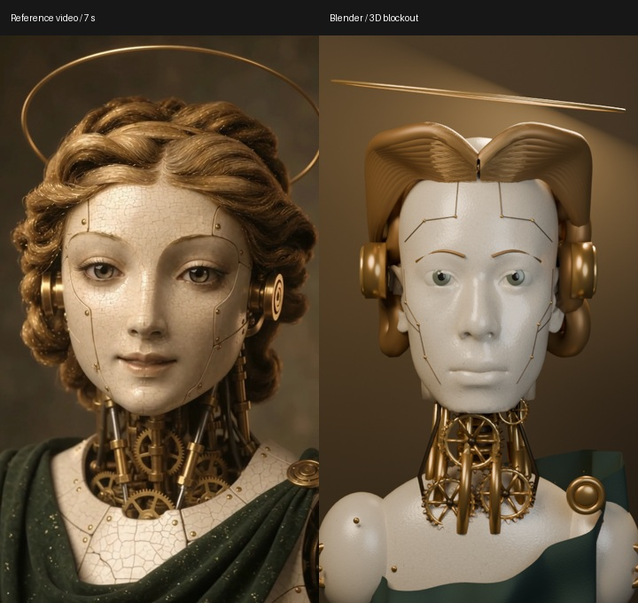
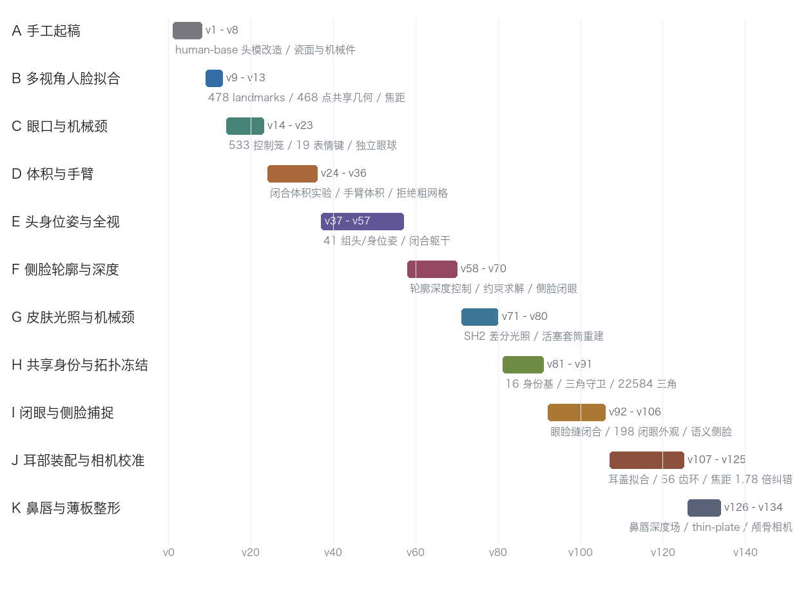
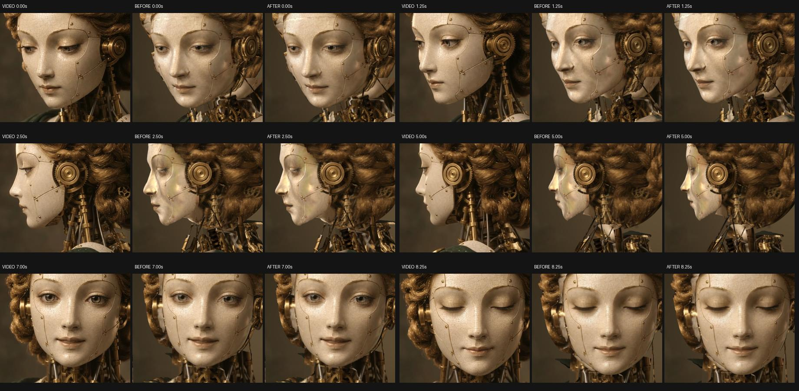
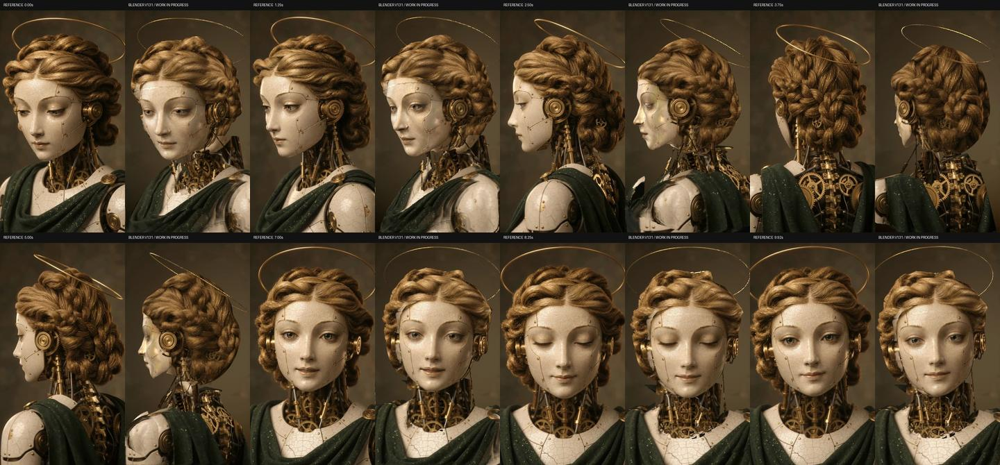
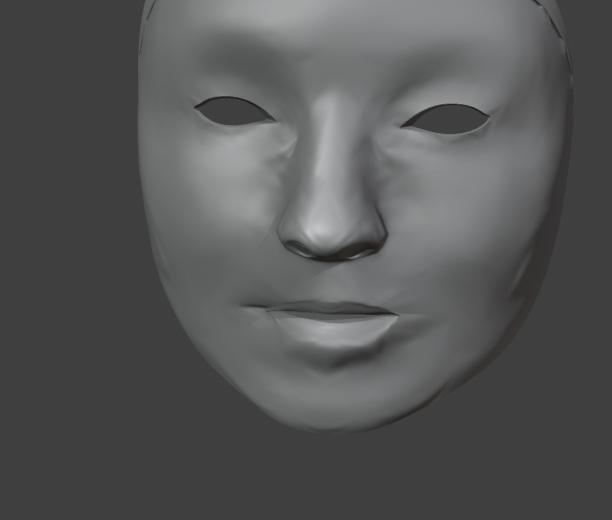

最近，Google 的一个 Demo 引起了我的兴趣。
它展示了一个令人惊讶的能力：给 AI 一段大西洋海底的视频，它就能生成一个 Three.js 的三维场景。
至于这个 Demo 究竟是如何实现的，目前有不同的解释。
一种说法是，模型本身已经具备了很强的空间感知能力，可以从二维视频中理解三维结构，直接重建场景。
另一种说法是，它依靠 Swarm，也就是多智能体协作。整个过程更像一条流水线，有的 Agent 负责几何建模，有的负责材质，有的负责灯光，最后把它们组合成一个完整的三维世界。
与此同时，也有人用 Claude 做出了非常惊艳的三维动画。
那些作品确实很漂亮，动画流畅，视觉设计也很出色。不过，我看到的案例整体还是偏卡通风格，与真正的超写实三维场景还有一定距离。
这让我产生了一个问题。
在我心中，GPT 一直是最出色的 AI 绘画工具之一。
此前我用它生成过大量概念图。无论是艺术表现、构图、光影还是细节设计，效果都非常好。
既然 GPT 可以画出如此漂亮的概念图，为什么不能把这些图真正建成三维世界？
于是，我决定做一次实验。
▲ ■ ●
一、从生成一张图，到生成一个世界
实验的起点很简单。
我先让 GPT 生成了一张概念图。
图 00｜GPT 生成的概念图，整个实验的起点
图 00｜GPT 生成的概念图，整个实验的起点。
如果按照以前的工作流程，我会继续生成几张不同角度的参考图，然后把它们交给 Seedance 这样的视觉生成模型，直接生成一段高清视频。
这也是目前很常见的一种高质量 AI 视频制作方式。
它的优势很明显：生成速度快，画面漂亮，视觉效果好，而且不需要建立完整的三维模型。
但它有一个根本问题：
最终得到的是视频，而不是一个真正可以操作的三维世界。
视频中的人物可以看起来非常真实，但我们不能随意改变机位，不能从另一个角度观察人物，也不能直接修改其中的灯光、材质或动作。
如果想要一个新的镜头，往往还需要重新生成。
它是一段已经完成的视觉结果，而不是一个可以继续编辑、操作和探索的三维场景。
这次，我想尝试另一条路线。
不再让 GPT 只生成图片，也不再直接把图片交给视频模型。
而是让 GPT 使用代码，真正建立一个三维世界。
这个世界应该拥有几何结构、材质、光照和可编辑的模型，最好还能够运动。
▲ ■ ●
二、第一次建模，像乐高积木
当然，事情并没有那么容易。
如果直接给 GPT 几张参考图，让它自己生成三维模型，结果往往是一塌糊涂。
它做出来的东西简直像乐高积木。
几何结构粗糙，细节缺失，材质不像真的。与它自己画出的精美概念图相比，简直不像同一个模型的作品。
在这次实验中，最初生成的 Blender 模型也是如此。

图 01｜左：参考视频第 7 秒；右：最初的 Blender 三维模型
图 01｜左：参考视频第 7 秒；右：最初的 Blender 三维模型。
不过，仔细观察，这个模型又不是完全没有价值。
它大致确定了人物的比例、位置、相机角度和不同部件之间的空间关系。
只是具体的东西还没有真正做出来。
头发像一个金色的环，耳朵像圆盘，机械颈部只是几根圆柱，衣服也只有粗糙的轮廓。
位置大体正确，但东西还没有。
这让我意识到，可以不要求 GPT 一次性完成整个模型。
它只需要先建立一个大致正确的结构，然后不断往里面增加细节。
这就引出了另一个问题：
如果 GPT 第一次做不好，那么能不能让它反复修改，直到做得足够好？
▲ ■ ●
三、为什么我没有继续使用 3DGS
在实验过程中，我还尝试了另一条路线：3DGS（3D Gaussian Splatting，三维高斯泼溅）。
从视觉重建的角度看，这是一种非常有吸引力的技术。
它可以根据多视角图像优化一组空间中的高斯基元，再通过这些基元渲染出具有很强真实感的画面。
在某些观察角度，它甚至比传统多边形模型更接近真实拍摄。
但很快，我遇到了一个问题。
当人物闭上眼睛时，模型出现了空洞。
原因并不复杂。
我使用的重建流程主要依赖已经被观察到的视觉信息。那些没有拍摄到的地方，例如眼睑内部、被遮挡的结构，并没有可靠的几何依据。
当人物保持原来的姿态时，这种缺失并不明显。
但一旦要求人物做出新的表情，例如闭眼，就必须生成那些原来没有观察到的表面。
这时，问题就暴露出来了。
当然，这并不意味着 3DGS 在原理上不能生成动态形变或补全遮挡区域。动态高斯、几何补全和生成式先验都在尝试解决类似的问题。
但至少在我的这次实验中，直接使用 3DGS 并没有很好地解决这一问题。
最后，我还是选择回到传统的多边形建模。
它的缺点也很明显：初始效果不够真实，细节需要花费大量精力去建立。
但它有一个重要优势：
我可以直接控制几何拓扑，也可以定义那些从未在视频中出现过的形变。
例如，眼睛从睁开到闭合，并不需要每一种中间状态都在视频中被拍摄到。
只要建立合理的眼睑结构和形态键，就可以让模型在不同表情之间连续变化。
最终，这套资产拥有 11,468 个顶点、22,584 个三角形和 28 个形态键。
这些数字本身并不惊人。
真正重要的是，它们构成了一个可以继续修改和驱动的三维结构。
这让我逐渐意识到：
重建和建模不是完全相同的事情。
重建更多是复现已经观察到的世界。
而建模除了复现，还需要构造一个能够表达未被观察到的状态的结构。
当然，两者并不是互斥的。真正强大的系统很可能同时需要重建与生成式建模。
▲ ■ ●
四、我给 GPT 装上了一个 RSI
这次实验与以往最大的区别，是我写了一个 RSI 系统。
RSI 是 Recursive Self-Improvement，递归自我改进。
我不再要求 GPT 一次性生成一个完美的模型，而是让它能够不断观察、尝试、比较和修改。
同时，我让它调用各种外部 AI 工具。
例如，人脸识别、SfM（运动恢复结构）、图像分割等工具，帮助它分析参考图像中的几何关系、相机位置和物体边界。
我还给它提供了解剖学知识。
这样，它建模人物时不只是模仿二维图片，而是可以参考真实人体的结构关系。
然后，我让它对照视频，一点一点地建模。
自己调整形状，自己修改材质，自己调整灯光和阴影。
但这里有一个关键：
真正让系统能够持续进步的，不只是它会修改，而是每次修改之后，都必须接受检查。
整个过程大致分为五步。
第一步，理解场景。
从一段 10 秒、720×1280 分辨率、24 fps、共 240 帧的视频中提取关键帧，估计相机、三维结构和物体位置。
先判断场景里有什么，每个部件大致在哪里，它们之间有什么空间关系。
第二步，分解模型。
把整个物体拆成不同部分。
例如，面部、眼睛、嘴巴、机械颈部、耳部、身体、头发和光环等。
每一个部分单独建模，再逐步装配起来。
第三步，生成与比较。
针对每个部件，从多个参考角度进行建模。
再使用 Blender 从对应的相机位置渲染，与原始视频中的画面进行比较。
几何不对，就修改几何。
比例不对，就调整比例。
材质不对，就重新修改材质。
光照不对，就重新调整灯光。
第四步，评价结果。
这是整个系统中非常重要的一步。
不能只让 GPT 自己说它做得好不好。
必须有外部的评价指标。
例如，几何轮廓是否重合，颜色偏差有多大，像素误差是否下降，多视角下的模型是否一致。
同时，还可以利用视觉语言模型进行整体语义判断。
第五步，决定是否保留修改。
如果结果确实变好了，就保留。
如果修改导致其他角度变差，或者引入新的几何问题，就回退。
失败方案也要记录下来，避免下一次重复犯错。
于是，原来的一次性生成问题，就变成了一个持续优化的问题。
GPT 不需要第一次就知道正确答案。它只需要能够提出下一次修改，并且让系统可靠地判断这次修改有没有价值。
这才是 RSI 在这次实验中的核心作用。
▲ ■ ●
五、134 个版本，GPT 究竟做了什么
最后，整个实验一共留下了 134 个版本。
其中，主分支从 v1 迭代到 v131，共 131 个版本。
还有一个从主分支分出去的实验性支线，产生了另外 3 个版本，但最终没有被采纳。
工程中保留了 86 个 Blender 文件、276 份验证 JSON 和 202 条日志。
也就是说，整个过程不仅仅是在不断生成模型，还留下了修改和验证的记录。

图 07｜11 个阶段的工作内容及对应版本区间
图 07｜11 个阶段的工作内容及对应版本区间。
但有一点必须说明：
134 个版本，并不意味着 134 次进步。
真正对主分支结果产生明显影响的关键检查点，只有大约 9 个。
有些修改成功了。
有些修改失败了。
有些方向尝试了几次之后，发现根本不值得继续，于是整条支线都被放弃。
这让我觉得非常有意思。
因为这和真实的工程开发过程非常相似。
我们并不是每一次修改都能取得进步。
很多时候，尝试的意义恰恰在于发现某一种方法不可行。
例如，系统曾尝试建立更复杂的多视角体积结构，但发现换角度之后，图像效果反而下降。
也尝试过更接近物理模型的光照方法，但最终渲染的误差更大。
还有一些几何修改，在数学上的方向检查没有问题，但实际渲染却产生了可见的波纹。
这些方案都被拒绝了。
真正重要的不是 AI 能生成多少种方案，而是它能不能把不好的方案淘汰掉。
这也是我认为 RSI 比简单地让模型重复生成更有价值的原因。
▲ ■ ●
六、进步并不是线性的

图 06｜不同版本的整帧及面部区域图像误差变化
图 06｜不同版本的整帧及面部区域图像误差变化。
从实验数据来看，模型的进步并不是均匀发生的。
整帧平均绝对误差（MAE）从 0.0808 降低到 0.0748，大约改善了 7.3%。
固定面部区域的误差从 0.0903 降低到 0.0701，改善了约 22.4%。
但最有意思的地方是：
绝大部分改进发生在 v57 到 v80 之间。
这一段迭代使整帧误差下降了约 6.4%，面部区域误差下降了约 19.6%。
而后面的几十个版本，改善幅度已经明显减小。
这说明至少在这次实验中，迭代并不是简单的越多越好。
有些阶段，一个关键的结构调整，就能带来非常大的改善。
但当模型逐渐接近参考目标之后，后面的工作就更多是在修复局部细节。
可能是眼睑厚了一点。
可能是耳部的位置偏了一些。
也可能是光照和材质之间存在细微差异。
这些问题都很重要，却未必能够在整体图像误差上带来很大的变化。
所以，最终留下 134 个版本，并不意味着每一个版本都比前一个更好。
相反，很多版本的价值恰恰是证明了某种修改不应该保留。
这让我对 RSI 又有了一个新的理解：
递归改进不应该只追求更多的尝试，还应该学会判断什么时候值得继续，什么时候应该换方向，甚至什么时候应该停止。
▲ ■ ●
七、如何证明它真的建出了三维模型
这里还有一个很实际的问题。
如果最终展示的只是一张漂亮的渲染图，那么别人完全可以质疑：
这究竟是一个真正的三维模型，还是一套从特定角度看起来很漂亮的贴片？
所以，我对结果做了几组检查。
首先是多视角比较。
从同一套 Blender 资产出发，在六个不同的相机位置和时间点渲染，并与原视频对应画面进行比较。

图 02｜六组不同视角的原视频、修改前与修改后对照
图 02｜六组不同视角的原视频、修改前与修改后对照。
其次是侧脸。
侧脸往往是三维建模最容易暴露问题的角度之一。
正面看起来很漂亮的模型，转到侧面，鼻子、眼睛、耳朵和头部体积就可能完全不对。

图 03｜2.5 秒处的侧脸对照：原视频与 Blender v131
图 03｜2.5 秒处的侧脸对照：原视频与 Blender v131。
这次实验中，六个侧视角的平均轮廓误差从 5.378 像素下降到 5.036 像素。
其中，第 126 帧没有参与相应拟合，但轮廓误差仍从 4.513 像素下降到 4.074 像素。
这至少说明，部分几何改进能够迁移到未直接用于拟合的视角，而不只是让训练用的几张图片变得好看。
然后是全段验证。
不是挑一张最漂亮的图，而是检查整个 10 秒、240 帧的动画序列。

图 04｜10 秒视频抽帧与 Blender v131 对照
图 04｜10 秒视频抽帧与 Blender v131 对照。
最后，我还特意去掉照片贴图，只观察三维灰模。

图 05｜去除照片纹理后的三维灰模
图 05｜去除照片纹理后的三维灰模。
为什么要这么做？
因为在这次实验中，模型大量使用了固定 UV 照片贴图。
这是一种非常有效的提高真实感的方法：直接把参考视频里的真实颜色映射到三维表面。
但问题是，这些颜色往往包含了原来拍摄环境中的光照。
在原始视角，它可能非常真实。
一旦换一个角度，就容易暴露问题。
例如，正面面部的 SSIM 曾达到 0.9795，但换到第 30 帧对应视角时，SSIM 只有 0.5149。
所以，不能简单地把画面相似理解为几何和材质都正确。
图像真实、几何正确、材质真实，是三个不同的问题。
除了视觉对比，我还检查了三维结构本身。
最终模型拥有 11,468 个顶点、22,584 个三角形和 28 个形态键。
在 240 帧检查中，三角索引保持不变，相对上一检查点没有新增的三角翻转，最小法线余弦为 0.2819，高于预设的 0.1 门槛。
一些形变连接和机械装配误差也维持在很小的数值范围内。
这些检查不能证明模型已经完整还原了真实几何，但至少能证明，它并非只能从一个角度观看的静态画面。
它拥有一套可编辑、可变形并接受几何验证的三维结构。
当然，这个结果仍然远远谈不上完美。
例如，侧后方耳部与头部的角度、眼睑厚度、鼻唇细节、肩臂和衣服的体积、后颈编发的遮挡，以及光照与材质的分离，都还有问题。
工程记录中的完成标记仍然是 completion_proven = false。
换句话说，虽然模型已经取得了相当大的进步，但我并没有把它视为一个完全完成的作品。
▲ ■ ●
八、它不仅是三维的，而且可以做动画
这次实验真正让我兴奋的，并不是最终的某一张渲染图。
而是模型可以继续被修改和驱动。
它不再只是一张图片，也不再是一段不可编辑的视频。
目前的资产已经包含 28 个形态键，以及用于面部轮廓、眼睑和嘴部的形变关系，还有机械结构中的 6 组活塞约束。
这意味着，它已经拥有部分动画所需要的基础结构。
例如，人物可以通过形态键生成不同的眼睑状态，而不必要求每一个中间状态都在原视频中出现过。
但这并不意味着完整的角色动画系统已经完成。
身体骨骼、蒙皮权重、完整的动作驱动，以及实时引擎中的约束转换，仍然需要进一步开发。
特别是蒙皮和骨骼动画可能引入新的几何形变问题，因此还需要重新进行全段拓扑和形变验证。
我下一步想做的，就是让这个模型真正动起来。
并且不只是让它在 Blender 里渲染动画，而是能够在实时引擎中运行。
例如，使用 Three.js 或其他三维引擎。
用户可以通过一个链接打开场景，自由旋转视角，观察人物的表情，让它眨眼、转头，甚至与它交互。
这才是我想要的最终效果。
从计算复杂度看，22,584 个三角形对于现代 GPU 来说并不算高。
但真正要做成稳定的实时场景，还需要优化材质、纹理、头发、光照以及动画驱动。
例如，把部分离线材质效果转化为 PBR 材质，把纹理打包成图集，把复杂的发束转化为更适合实时渲染的结构。
这些工作仍然需要完成和验证。
但至少，这次实验已经让我看到了从生成图片走向可编辑三维资产的可能性。
▲ ■ ●
九、为什么我仍然认为 GPT 是代码建模之王
经过这次实验，我对 GPT 的能力有了不同的理解。
如果只比较一次性生成的三维模型，GPT 的表现未必出色。
甚至可以说，它最初做出来的东西很差。
但是，当它拥有工具、知识、反馈和递归改进能力之后，情况就完全不同了。
它可以把一个非常复杂的任务拆解成许多小问题。
每一个问题都可以单独求解。
然后不断比较结果、发现错误、调整参数，再把改进逐渐整合起来。
134 个版本之后，最终的结果已经远远超出了它最初那套像乐高积木一样的模型。
这让我相信，对于这一类任务，我们不能只通过模型第一次生成的结果，判断它最终能够达到的能力上限。
当然，我也必须承认，这次实验并不是严格的模型对比。
我让 GPT 在 RSI 系统中进行了长期迭代，而我看到的一些 Claude 案例，使用的工具、运行条件和迭代次数并不相同。
所以，这个实验不能严格证明 GPT 比 Claude 或其他模型更强。
如果要进行真正的比较，应该让不同的模型使用同一套工具、评价指标和计算预算，再比较最终效果。
因此，“GPT 才是代码建模之王”，更多是我在这次实验之后的个人判断，而不是一个已经由对照实验验证的排名。
但我觉得，这并不影响这次实验真正有趣的地方。
GPT 最让我惊讶的，并不是它第一次能做得多好，而是它可以在一个持续反馈的系统中，把原来做不好的事情逐步做好。
如果把功劳全部归给 GPT，也不完全准确。
外部工具、评价指标、失败回退和整个 RSI 系统，同样是成功的重要原因。
也许，更准确的说法是：
GPT 是一个非常适合被长程迭代系统驱动的代码建模底座。
我仍然愿意把它称为代码建模之王。
但这里的“王”，不是指一次生成就能拿出最好的结果。
而是指它能够利用代码、工具和反馈，持续构造和完善一个复杂的三维世界。
▲ ■ ●
十、未来，也许可以把电影直接变成 3A 游戏
这次实验还让我产生了一个更加大胆的想法。
也许，有一天，我们可以把一部电影直接交给 GPT，让它重建整个三维世界，甚至生成一款 3A 游戏。
电影本身已经包含了大量信息。
人物的外貌、服装、动作，建筑的结构、场景的布置、灯光的风格，以及整个故事的情节和节奏，都可以成为建模的参考。
如果 AI 能够从视频中理解这些内容，再通过三维重建、代码生成和递归优化，将它们转换成可编辑的三维资产，那么理论上，就有可能逐渐构造出电影中的世界。
当然，这件事远比重建一个人物复杂。
电影只展示了有限的镜头。
镜头之外的世界、物体背面的结构、人物没有展示过的动作，以及游戏所需要的物理、碰撞、交互和玩法，都必须另外设计。
而且，游戏不仅仅是一个三维场景，还需要完整的交互逻辑和运行系统。
所以，这并不意味着今天已经可以把一部电影自动变成 3A 游戏。
但如果未来 AI 可以自主建模、自主设计动作、自主编写交互代码，并不断测试和改进，事情就会发生变化。
想象一下：
我们看完一部电影，不再只是欣赏屏幕上的画面。
我们可以走进电影中的城市。
走进那些镜头从未展示过的房间。
和其中的人物交谈。
甚至改变故事的发展。
过去，要创造这样的世界，可能需要一个庞大的开发团队，花费数年时间。
未来，也许只需要把电影交给一个足够强大、又足够有耐心的 AI 系统。
这并不是今天已经实现的能力。
但至少，这次实验让我觉得，它已经不再只是一个完全无法想象的方向。
▲ ■ ●
最后：从生成画面，到生成世界
回头来看，这次实验给我最大的感受，并不是 GPT 已经能够生成多么完美的三维模型。
恰恰相反，它第一次生成的模型非常糟糕。
但经过 134 个版本的尝试、修改、验证和回退，它最终建立了一套具有相当复杂度的三维资产。
这个过程让我看到了一种与传统 AI 生成完全不同的工作方式。
过去，我们让 AI 生成一张图片。
后来，我们让 AI 根据图片生成一段视频。
现在，我们开始尝试让 AI 根据图片和视频，真正构造一个可以编辑、可以运动、可以交互的三维世界。
这是三个不同的层次。
生成画面，生成运动，生成世界。
而从生成画面走向生成世界，关键可能不只是模型拥有多么强大的视觉能力。
更重要的是，它能否把视觉理解转化成结构，能否通过代码表达结构，并且能否不断验证和改进自己的结果。
在这个过程中，失败并不可怕。
一次生成失败，可以再修改。
一个部件不好，可以单独重做。
一种方法没有效果，可以回退，甚至放弃整条技术路线。
真正重要的是，系统是否能够判断哪些修改值得保留，哪些修改必须拒绝。
这让我想到一个更普遍的问题：
AI 的能力上限，也许并不等于它单次推理的能力上限。
当一个模型能够调用工具、积累经验、验证结果，并通过持续迭代来解决问题时，它最终能完成的事情，可能远远超出一次生成所表现出来的水平。
当然，改进也不是无限的。没有可靠的评价指标、正确的工具和足够好的目标，重复一千次也可能只是不断犯错。
但如果这些条件能够建立起来，那么很多原本看起来做不到的复杂任务，就有机会被拆解、验证，并一步一步解决。
我不知道这条路最终能够走多远。
但至少，这次 134 个版本的实验让我相信：
一个第一次连模型都捏不好的 AI，也可能通过持续的反馈和改进，最终完成相当复杂的三维作品。
所以，我仍然坚持最初的判断：
GPT 才是代码建模之王。
只是现在，我对这句话有了更深一层的理解。
不是因为它第一次就能做得最好。
而是因为，它能够在代码、工具和反馈构成的系统中，一次又一次地把作品做得更好。
真正让我兴奋的，不是 AI 已经学会了画出一个世界，而是它开始有能力亲手建造一个世界。